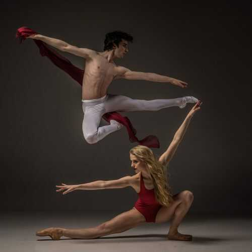
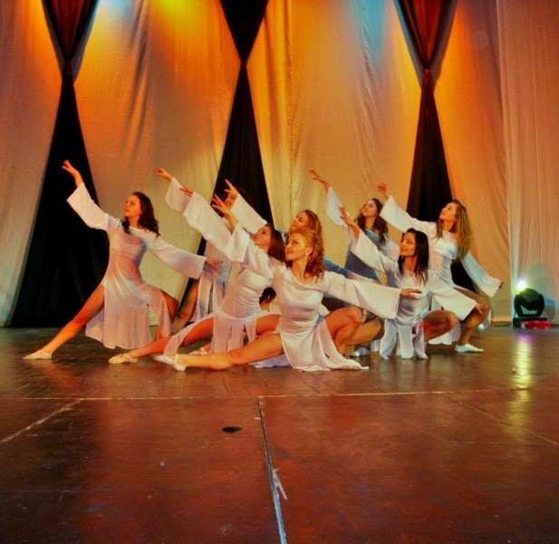
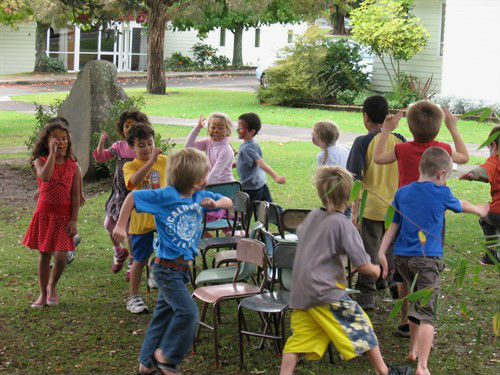

| Ce este dansul? | ||
|---|---|---|
|  | Dansul reprezintă o formă de exprimare prin intermediul unor gesturi și mișcări ce au rolul de a transmite anumite emoții. Acesta este un limbaj mistic al corpului, înțeles pe deplin doar de autorul mișcărilor corespunzătoare, publicul văzând doar ce este lăsat să vadă. De-a lungul timpului, dansul a avut multe semnificații, de la ritualuri de invocare a forțelor divine, la ritualuri de reușită la vânătoare sau pur și simplu liberă exprimare, acesta făcând mereu parte din viața omului. |
 |
| Cum să îmi găsesc inspirația? | ||
|---|---|---|
| Spectacole în scop caritabil | ||
 |
Multe spectacole de dans sunt organizate deseori cu scopuri caritabile, ceea ce arată un caracter unit, dezvoltat în urma lucrului în echipă. Unul dintre acestea, care s-a bucurat de o mare popularitate și apreciere din partea publicului, a fost spectacolul de dans Jeanne d‘Arc, o producţie Dance Conspiracy, care a avut loc pe data de 6 martie 2019, în orașul Craiova. Acesta a fost organizat de Lions Club Craiova pentru susţinerea tinerilor talentaţi cu posibilităţi reduse. „O călătorie iniţiativă a celebrului personaj Ioana d’Arc, efectuată în sens invers cursului natural al universului, subliniind relativitatea timpului, spaţiului şi a tuturor principiilor abstracte ale existenţei. Călătoria începe în tenebrele obscure ale morţii şi se termină în lumina facerii. Parcursul voiajului este presărat cu personaje simbolice, întâlniri şi despărţiri, întâmplări destinate evoluţiei spirituale şi istorice. Este povestea principiului feminin care capătă o identitate: Ioana d’Arc”, menţionează organizatorii. |
 |
| Freestyle Battle | ||
Dar haide să revenim la o idee precedentă, referitoare la lucrul în echipă. Ai auzit vreodată noțiunea de battle? Ei bine, acesta presupune întrecerea unor dansatori prin freestyle sau alte stiluri. |
Chiar dacă este o competiție până la urmă, dansatorii tot lucrează în echipă, deoarece simt aceeași muzică, se conectează la aceleași stări și împreună fac o atmosferă frumoasă și transmit toate emoțiile lor. |
| Festivalul Internațional de Muzică și Dans | ||
Poate preferi să admiri dansul, mai degrabă decât să îl practici, sau poate pur și simplu vrei să te apropii de universul acestei arte, să îl cunoști înainte de a porni muzica și a da formă sentimentelor tale? |
||
 Teatrul Naţional Oleg Danovski
|
Teatrul Muzical, cum a fost numit inițial, a fost înființat în anul 1957, în orașul Constanța, ca unul dintre cele mai nobile instituţii de artă din țară. Numele actual datează din anul 2004 - „Teatrul Naţional de Operă şi Balet Oleg Danovski”. În acest teatru a luat naștere, în anul 1975, Festivalul Muzicii de Operă şi Balet, care, datorită diversității spectacolelor muzical – coregrafice, și-a schimbat numele în Festivalul Internaţional al Muzicii şi Dansului. Este recunoscut la nivel național prin longevitatea și complexitatea sa (45 de ediții). În cadrul acestui eveniment cultural ne putem bucura de concerte de muzică simfonică, recitaluri de muzică, concerte de muzică pop-rock, opere, spectacole de balet și operetă etc. Acest festival este o dovadă impresionantă a armoniei create de dans și muzică, care sigur te va face să îți dorești să urci pe scenă! |
 Spectacole de dans ediția a 45-a (2019)
|
| Care este atitudinea adolescenților? |
|---|
Odată cu evoluția lumii, caracterul adolescenților a devenit foarte diversificat, mai ales în domeniul artistic. Dar dansul conține stiluri care să mulțumească pe oricine, de la dansuri populare, tradiționale, la street dance. Adolescenții, ca și mine, văd dansul ca pe o eliberare de toate grijile, unde tot ce contează este prezentul, trăirea momentului. În ziua de astăzi este firesc ca toată lumea să danseze. Această artă nu are reguli stricte, deoarece fiecare om are propriul stil de dans prin care se exprimă, se lasă dus de val. Din experiența personală pot spune că în timpul dansului, emoțiile sunt ridicate la cota maximă, simțind muzica până în adâncul sufletului. Dansul și muzica sunt în armonie totală, una fără cealaltă nu au aceeași însemnătate, după părerea mea fiind codependente. Nu degeaba în majoritatea clipurilor melodiilor există persoane care execută o coregrafie potrivită genului de muzică. Sir Ken Robinson, autor și consultant internațional în domeniul artei, spune: |
|  | Orice fel de copilărie ai avut, cu siguranță ai jucat măcar o dată Scaunele muzicale sau Statuile muzicale. Dar în cazul în care ai uitat, te voi duce într-o călătorie spre copilăria ta: nicio aniversare nu era lipsită de Scaunele muzicale, jocul în care se așezau în cerc un număr de scaune cu 1 mai mic decât numărul de jucători. Melodia era pornită, iar copii începeau să danseze în jurul scaunelor până melodia era oprită. Atunci începea bătălia pe scaune, deoarece, cel care nu a prins loc era eliminat. Ei bine, începi să-ți amintești toate acele lucruri frumoase? Iar când vine vorba de Statuile muzicale, cu siguranță îți aduci aminte de chinul cu care încercai să stai nemișcat, și să încerci să te miști când erai sigur că nu se uită nimeni, pentru a nu fi descalificat. Știu asta, pentru că și eu făceam la fel. 😂 În caz că nu te-am convins până acum, am cerut părerea unor prieteni referitor la plăcerea de a dansa. |
Prodan Alexandra, 15 ani |
Brânză Teona, 15 ani |
Tvigun Tazu, coregraf street dance, 31 ani |
„Eu am vrut să mă apuc de dans datorită coregrafilor și dansatorilor pe care îi urmăresc pe rețelele de socializare. Pe lângă asta, îmi plăcea să pun muzică și să dansez prin casă. Pe mine dansul parcă m-a ajutat să mă exprim mai ușor și să fiu mai binedispusă. Când dansez mă simt liberă, iar dacă îmi place mult piesa coregrafiei devin foarte energică. Prin dans mă exprim cum nu mă pot exprima în cuvinte.” |
„Eu mă eliberez de toate problemele mele prin dans, deoarece iubesc ceea ce fac. Dansul m-a schimbat foarte mult ca persoană pentru că am devenit mai îndrăzneață și am învățat să îmi controlez emoțiile. Baletul se axează în mare parte pe postură și grație, iar pe de altă parte, street dance-ul pune accent pe atitudine.” |
„An de an mă văd pe mine însumi în cursanți și îi privesc cum evoluează, cum se dezvoltă. Motto-ul nostru, Fell like home a ajuns în inimile tuturor participanților, acesta fiind chiar scopul , de a crea o a doua casă, o a doua familie. Relația coregraf-cursant a depășit de mult limitele, deoarece, când dansăm nu suntem decât oameni simpli, de vârste diferite, care se adună pentru a împărtăși aceeași pasiune.” |
| Care este începutul? | |
|---|---|
Știu că bucuria pe care o simt când dansez nu poate fi exprimată în cuvinte, așa că am ales să nu vorbesc. Dă-ți singur/ă cu părerea după ce vizionezi următoarele videoclipuri: |
|
| Și totuși dacă vreau să mă axez pe un stil anume de dans... | ||
Stilurile de dans sunt numeroase, fiind influențate de cultura fiecărei țări. Totuși, pentru a te ajuta să alegi un stil care te definește sau cel puțin a te îndruma spre o cultură în care te regăsești, îți prezint mai jos o listă cu stilurile principale de dans: |
||
|
Această categorie cuprinde 3 stiluri, anume Breakdance, Streetdance și Hip-Hop. Fiecare dintre ele necesită o atitudine relaxată, puterea de a simți muzica prin vene. Dar oricum, repetiția rămâne mama învățăturii, iar colaborarea este foarte importantă, fiind un stil de dans realizat de obicei în grup, dar nu întotdeauna în sincron, ceea ce dă o nuanță de autenticitate fiecărui dansator. Cu un antrenament de 2 ori pe săptămână (cel puțin), și tu poți ajunge un mare dansator. |
 |
 |
Dansul modern este de 2 tipuri, Disco sau Rock. Acest gen este mai elegant față de primul, deși nu este necesară o poziție dreaptă. Ca la orice alt tip de dans, zâmbetul nu trebuie să lipsească, pentru a transmite publicului o stare cât mai bună. Deși dansul este o metaforă în sine, dansul modern poate aborda teme care să ilustreze cotidianul cu sinceritate, atingând laturi sensibile ale fiecăruia dintre noi. |
 |
 |
Acestea conțin multe tipuri, din care cele mai cunoscute sunt Salsa, Samba, Cha-Cha, Rumba. Deși provin din alte nații, ele au luat o mare amploare în România în ultima vreme. Rochiile frumoase și tocurile înalte atrag multe fete să încerce astfel de dansuri, așa că ce mai aștepți? Alege o ținută: | ||
|
Salsa
|
Rumba
|
Samba
|
|
Fiind o categorie largă, când vorbim de balet, vorbim despre balet clasic, dans contemporan, modern sau clasic. Acestea sunt cele mai elegante stiluri, în care poziția contează foarte mult. O balerină sau un balerin trebuie să aibă grație. Deși unii nu cred, acest tip de dans este mult mai greu decât pare, dar nu e un motiv de pierdere a încrederii. Baletul necesită multă dedicare, voință, timp și pasiune. |
 |
 |
|
Cât de mult mi se potrivește această artă? ~ Chestionar ~ |
||
|---|---|---|
|
|
|
|
|
|
|
|
|
|
|
|
Calculând punctajul în funcție de ce te caracterizează, vom realiza o evaluare a potențialului tău în începerea practicării acestei arte: |
||
Poate nu ți-ai dat seama încă, dar ești un adevărat dansator! Radiezi energie și e timpul să îi bucuri și pe cei din jurul tău. Ce mai aștepți? A sosit vremea ta! Trebuie doar să ai încredere în tine pentru că poți! Nu te lăsa descurajat de alții mai avansați , pentru că toată lumea a avut un punct de pornire, în care nu putea decât să învețe și să-și depășească propriile limite. |
Dansul ar putea fi pentru tine, iar dacă ai încerca măcar, ai ști sigur. Să înceapă spectacolul! În cazul în care totuși această artă nu te definește, nu-i nimic, sunt multe altele care cu siguranță ți se potrivesc. Dacă ești o persoană calmă, căreia îi place să surprindă natura, inspiră-te mai mult din celelalte secțiuni ale noastre pe cât de interesante, pe atât de utile! |
Poate că dansul nu este tocmai pentru tine. Dar fii fără grijă! Cel puțin acum știi ce nu ți se potrivește și te poți orienta spre domenii diferite, care implică mai puțină energie. Dacă totuși îți place muzica, poate ar fi momentul să începi niște cursuri de canto sau de un instrument. Oricare ar fi talentul tău, nu uita, ești o persoană specială prin simplul fapt că ești tu însuți! |